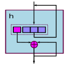

Catamorphism
Catamorphism
Catamorphism is yet another good known recursive scheme which is assitiated with folding. It's simple too and can be shown as pseudocode:
b::B ⊕::A||B->B h::A*->B h Nil = b h([a|as]) = a ⊕ (h as)
This strange operation ⊕ is dyadic operation between list item of type A and "zero"-item
of type B.
Scheme graphically looks like:

Some famous functions:
length = CATA<0, ⊕>, a ⊕ n = 1 + n map = CATA<Nil, ⊕>, a ⊕ bs = [f a | bs]
All of these are easy coded in Python:
def cata(b, l, op): if not l: return b x, *xs = l return op(x, cata(b, xs, op)) def length(l): return cata(0, l, lambda x, n: 1 + n) def mymap(f, l): return cata([], l, lambda a, bs: [f(a)] + bs) print(length([1,2,3,4])) print(mymap(lambda x: x+10, [1,2,3]))
And again: most interesting here is: how to transform it to become parallel.